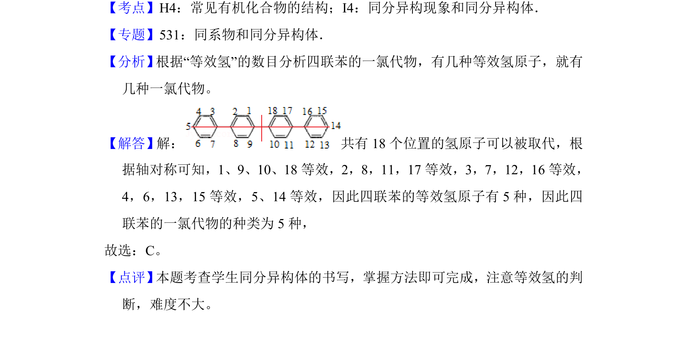

考点：同分异构体 等效氢 一氯代物
根据等效氢判断四联苯的一氯代物同分异构体数目。

📄 原 PDF 第 2 页：
素材/真题/吉林/2008-2024·（吉林）化学高考真题/2014年高考化学试卷（新课标Ⅱ）（解析卷）.pdf
2．（6分）四联苯 的一氯代物有（ ） A．3种B．4种C．5种D．6种
【考点】H4：常见有机化合物的结构；I4：同分异构现象和同分异构体．菁优网版权所有 【专题】531：同系物和同分异构体． 【分析】 根据“等效氢”的数目分析四联苯的一氯代物，有几种等效氢原子，就有 几种一氯代物。 【解答】解： 共有18个位置的氢原子可以被取代，根 据轴对称可知，1、9、10、18等效，2，8，11，17等效，3，7，12，16等效， 4，6，13，15等效，5、14等效，因此四联苯的等效氢原子有5种，因此四 联苯的一氯代物的种类为5种， 故选：C。 【点评】 本题考查学生同分异构体的书写，掌握方法即可完成，注意等效氢的判 断，难度不大。